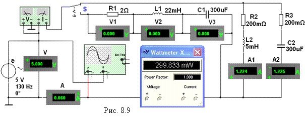

Задание 4. Запустить
лабораторный комплекс Labworks и среду
МS10 (щёлкнув мышью на команде Эксперимент меню комплекса Labworks). Открыть файл 8.9.ms10, размещённый в папке Circuit Design Suit 10.0, или собрать на рабочем поле среды МS10 схему (рис. 8.9) для исследования
резонансных явлений в колебательных контурах и установить параметры её
элементов (см. табл. 8.1), а также
сопротивления RА = 1 мОм амперметров
А1, А2 и А3 и RV = 10 МОм вольтметров V, V1 и V2, режим АС работы измерительных приборов.
Скопировать схему цепи на страницу отчёта.
В нижнем положении
переключателя S формируется последовательный
колебательный контур, а в верхнем – параллельный. С помощью ваттметра и
осциллографа, включенных на входе цепи, удобно наблюдать за характером
изменения потребляемой контуром активной мощности Р и угла сдвига фаз j при
изменении частоты f питающего контур напряжения u.

Модуль угла ÷j ÷ = arсcos(P/UI), а знак j определять по расположению осциллограмм
напряжения u и тока i на экране
осциллографа: если ток i опережает по фазе напряжение u, то угол j берётся со знаком "минус", а если
ток i отстаёт по фазе от напряжения u, то угол j имеет знак "плюс".
Ступенчато изменяя частоту ЭДС
источника е от 30 Гц до 140 Гц, снимать
показания приборов и заносить их в
табл. 8.2.